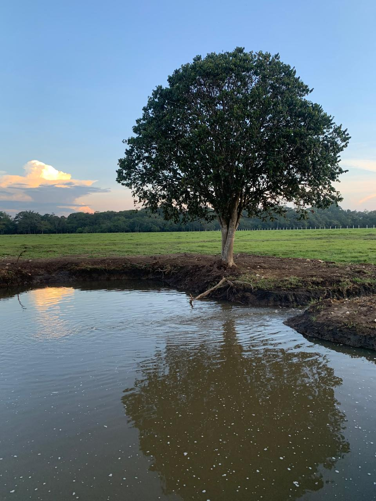
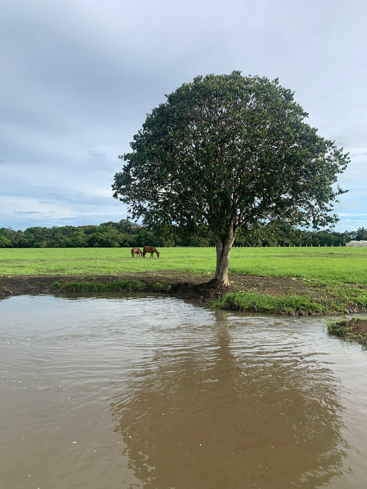
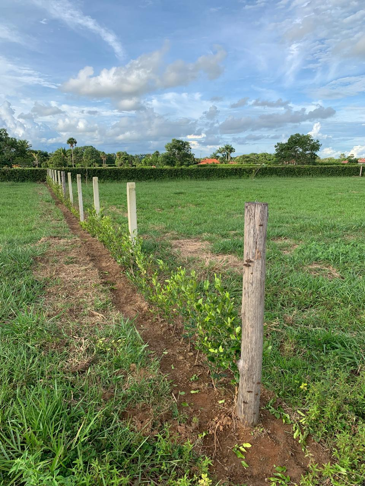
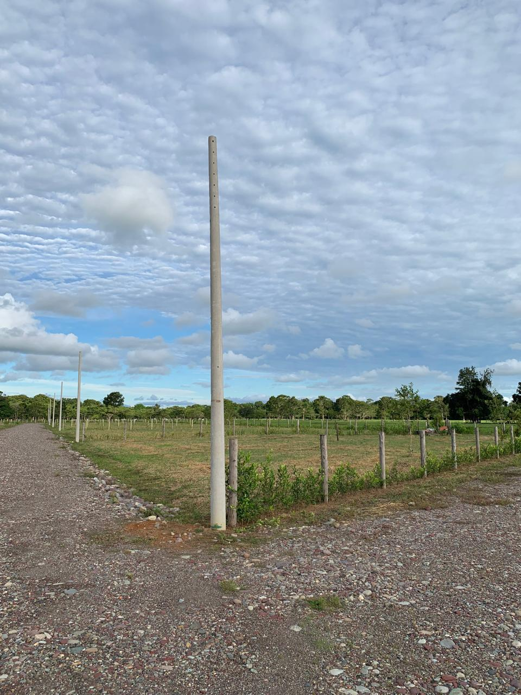
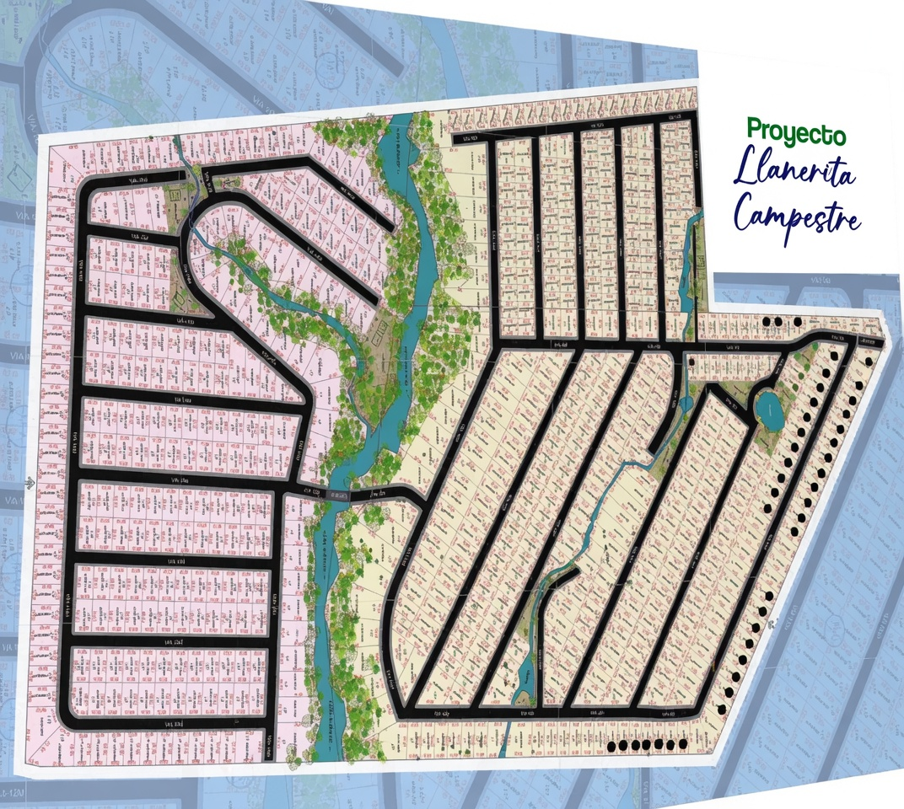

Villavicencio · Meta
Llanerita Campestre
Naturaleza abierta a minutos de la ciudad. Potreros, agua y horizonte para quien busca campo con la plusvalía urbana de Villavicencio al lado.
Resumen ejecutivo
Campo de verdad, ciudad al lado.
Llanerita Campestre es naturaleza abierta en las afueras de Villavicencio: potreros, agua y horizonte llanero, a pocos minutos de todos los servicios de la capital del Meta.
Una parcelación pensada para quien quiere aire y tierra sin renunciar a la cercanía urbana — el equilibrio que más rápido se valoriza.
Galería
Fotografías del proyecto y su entorno. Material de referencia.




Masterplan

El trazado sobre el potrero.
Distribución general del loteo y accesos. El plano definitivo, con áreas exactas y disponibilidad por lote, se comparte en la asesoría.
Características
Naturaleza con lo esencial resuelto.
Disponibilidad de agua sobre el predio, con acometida por etapas.
Redes eléctricas llegando a los lotes por etapas.
Vías internas hacia cada lote desde el acceso principal.
Portería proyectada para el ingreso a la parcelación.
Paisaje abierto de potreros, árboles y espejos de agua.
Compra con acompañamiento jurídico hasta la escrituración.
Por qué invertir
Campo con ciudad a la mano.
01
Cercanía a Villavicencio
Todos los servicios de la capital del Meta a minutos: salud, comercio, colegios y aeropuerto.
02
Precio de campo
El valor de la tierra rural con la demanda de una ciudad que crece hacia sus afueras.
03
Entorno natural
Potreros, agua y horizonte: el tipo de paisaje que sostiene la demanda de segunda vivienda.
04
Uso flexible
Casa de descanso, proyecto de renta o reserva de tierra que se valoriza con la ciudad.
Proceso de compra
Un proceso claro, sin letra pequeña.
01
Conversación inicial
Nos cuentas qué buscas. Te compartimos disponibilidad, precios y proyección — con discreción.
02
Visita guiada
Recorremos el proyecto contigo, lote a lote, para que elijas con los pies en la tierra.
03
Reserva del lote
Apartas tu lote con un acuerdo claro. Definimos plan de pago a tu medida.
04
Escrituración
Formalizamos la compra con acompañamiento jurídico de principio a fin.
Ubicación
En las afueras de Villavicencio.
A pocos minutos de la capital del Meta, con acceso desde las vías que salen de la ciudad. Distancias de referencia (demo):
Preguntas frecuentes
Lo que suelen preguntarnos.
Solicita información de este proyecto.
Te compartimos disponibilidad, precios y proyección de valorización — con discreción y sin compromiso.
Respondemos con discreción · Sin compromiso